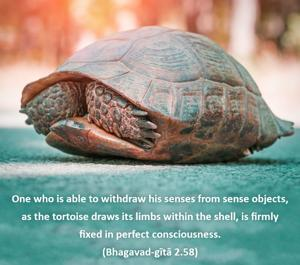
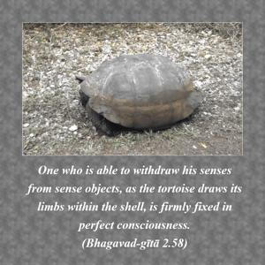
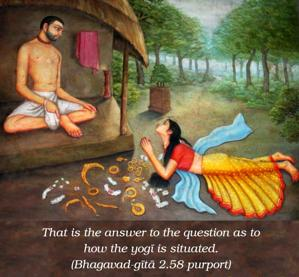
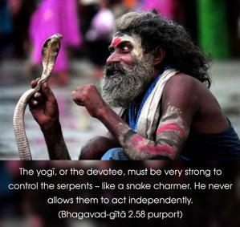

One who is able to withdraw his senses from sense objects, as the tortoise draws its limbs within the shell, is firmly fixed in perfect consciousness.




The test of a yogī, devotee or self-realized soul is that he is able to control the senses according to his plan. Most people, however, are servants of the senses and are thus directed by the dictation of the senses. That is the answer to the question as to how the yogī is situated. The senses are compared to venomous serpents. They want to act very loosely and without restriction. The yogī, or the devotee, must be very strong to control the serpents – like a snake charmer. He never allows them to act independently. There are many injunctions in the revealed scriptures; some of them are do-not’s, and some of them are do’s. Unless one is able to follow the do’s and the do-not’s, restricting oneself from sense enjoyment, it is not possible to be firmly fixed in Kṛṣṇa consciousness. The best example, set herein, is the tortoise. The tortoise can at any moment wind up its senses and exhibit them again at any time for particular purposes. Similarly, the senses of the Kṛṣṇa conscious persons are used only for some particular purpose in the service of the Lord and are withdrawn otherwise. Arjuna is being taught here to use his senses for the service of the Lord, instead of for his own satisfaction. Keeping the senses always in the service of the Lord is the example set by the analogy of the tortoise, who keeps the senses within.